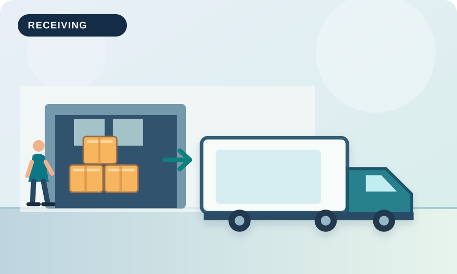
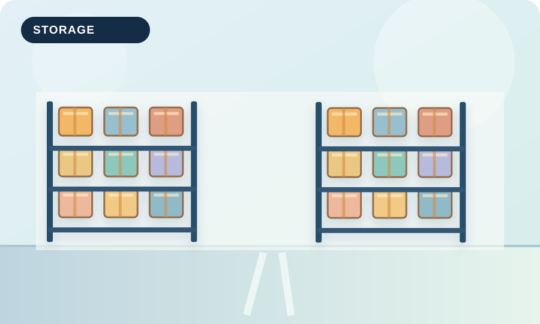
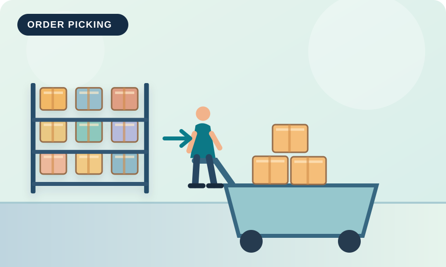
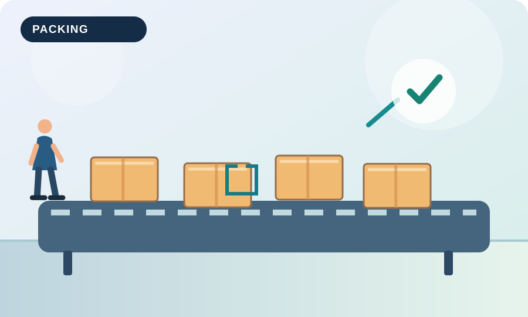
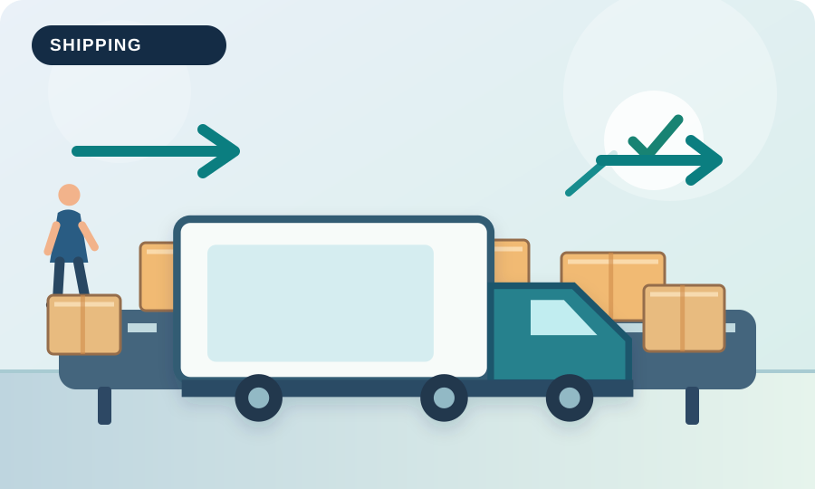
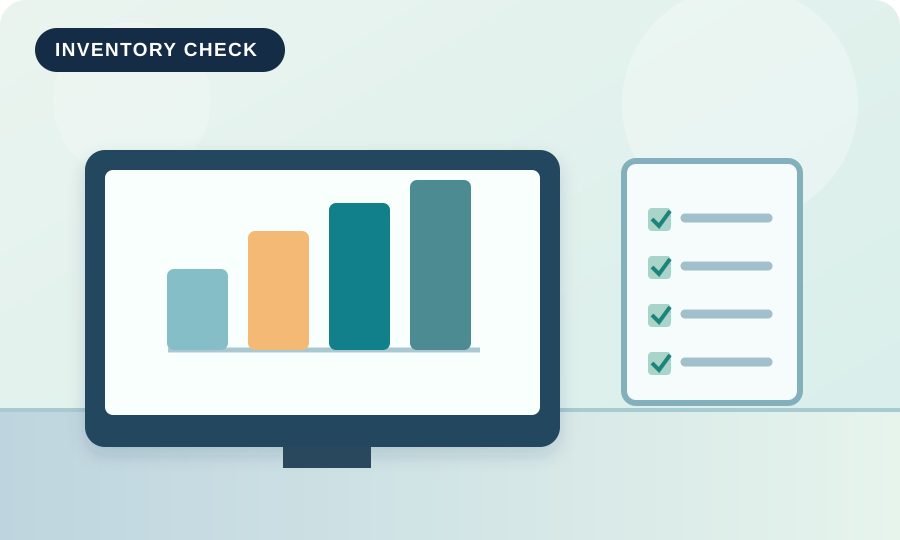

Step 01
Receiving
Verify incoming quantities and labels before making products available in the system.
A visual process tour
These six original illustrations show the essential steps in a simplified manufacturing warehouse journey.

Step 01
Verify incoming quantities and labels before making products available in the system.

Step 02
Store materials in marked locations and apply the appropriate rotation method.

Step 03
Use a clear pick list and location controls to reduce travel and selection errors.

Step 04
Confirm contents, protect products, and attach accurate package labels.

Step 05
Match shipments to orders, check documents, and record dispatch on time.

Step 06
Count selected stock regularly to investigate gaps before they grow.
A reliable handover between teams makes stock information more useful.